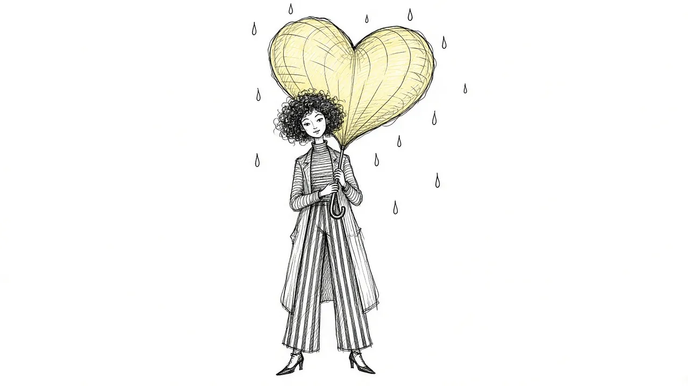

What Is Grief? A Plain Guide to the Most Human Experience

Grief is what love does when the person it was aimed at is no longer here. That is not a poetic way of avoiding the question. It is one of the most accurate short descriptions we have. The bond you built with someone does not switch off when they die. The habits, the expectations, the small daily attention that used to flow toward them keep reaching out, and they find an empty chair. That collision between a bond that continues and a person who is gone is what we feel as grief.
If you are reading this because someone you love has died, you may be looking for a map. This guide will not give you a neat one, because grief does not follow one. What it can give you is a clearer picture of what you are going through, why it feels the way it does, and what tends to help.
Grief is a whole-person experience
Most people expect grief to feel like sadness. Sometimes it does. But grief shows up in far more places than tears, and that surprises nearly everyone who goes through it.
In your emotions
Grief can bring sadness, yes, but also anger, guilt, relief, numbness, longing, fear, and even moments of laughter that feel out of place. Many people feel several of these in a single afternoon. None of them mean you are grieving wrong. They are what happens when a mind tries to make sense of a world that has suddenly rearranged itself.
In your body
Grief is physical. People describe tightness in the chest, heavy limbs, a stomach that will not settle, broken sleep, and an exhaustion that rest does not seem to fix. Appetite can disappear or swing the other way. If your body feels like it has been through something, that is because it has. We go deeper on this in The Physical Side of Grief.
In your thinking
Concentration often goes first. You might read the same paragraph four times, forget why you walked into a room, or lose words in the middle of a sentence. Your mind is quietly working on an enormous task in the background, and it borrows attention from everything else to do it.
In your sense of self
When someone central to your life dies, part of who you were goes with them. You may no longer be a daily caregiver, a spouse, a son with a living parent, or the friend who called every Sunday. Grief includes the strange work of figuring out who you are now.
Why grief feels so strange
One of the hardest parts of early grief is the feeling that you are losing your grip. You reach for your phone to text them. You hear their car and your heart lifts before you remember. You set out two mugs.
These moments are not signs that something is broken. They are signs that your brain built a deep map of the world with this person in it, and that map takes time to update. Every habit, every expectation, every "I should tell them about this" is a thread that connects you to them. Grief is partly the slow process of your mind learning, again and again, that they are not here, while your heart keeps insisting that they matter.
Grief is not a sign that you are failing to cope. It is a sign that you loved someone, and that love has nowhere obvious to go.
Common ideas about grief that do not hold up
A lot of the advice people receive about grief comes from good intentions and thin evidence. A few ideas are worth setting down.
- "There are five stages and you will go through them in order." The stages were never meant as a checklist. Many people never feel some of them, and most move back and forth in ways that look nothing like a staircase. Read more in Beyond the Five Stages.
- "You should be over it by now." There is no deadline. Grief usually softens and changes shape, but people often carry some form of it for the rest of their lives, and that is not a disorder.
- "Staying busy is the best medicine." Distraction can help you get through a hard day. Used as the only strategy, it tends to postpone grief rather than move it.
- "Letting go is the goal." Many grieving people find comfort in staying connected to the person they lost. Researchers call this continuing bonds, and it is a normal, healthy part of grief for many.
We cover more of these in Grief Myths: What People Get Wrong About Loss.
What grief is not
It can help to name a few things grief is not, because the fear of these can add a second layer of distress.
- Grief is not weakness. It takes enormous energy to carry.
- Grief is not a mental illness. It can sometimes sit alongside depression or become stuck in a way that needs extra support, but grief on its own is a normal human response to loss.
- Grief is not proof that you did something wrong. Guilt is a common visitor in grief, and it often speaks loudly without speaking truthfully.
- Grief is not only about death. People grieve divorces, estrangements, diagnoses, miscarriages, lost homes, and lost futures. Those losses are real too.
What tends to help
There is no single right way to grieve. Still, some things help many people.
Let it be what it is
Trying to force grief into a shape usually backfires. When you notice a wave of sadness or anger, see if you can let it be there for a moment rather than fighting it. That does not mean wallowing. It means not adding a second fight on top of the first.
Keep them in your life in a way that fits
Saying their name, telling their stories, keeping a photo nearby, cooking their recipe, or writing them a letter can all be ways of carrying the relationship forward. You get to decide what feels right.
Lean on people, even a little
Grief can make you want to withdraw, and some solitude is healthy. Even so, a single person who will listen without trying to fix you can make a real difference. If the people around you are not able to do that, a support group or counselor might be.
Look after the basics
Food, water, some movement, and as much sleep as you can manage will not erase grief, but they give you a sturdier body to carry it in. On the hardest days, the basics are enough.
Expect it to come in waves
Grief is rarely a steady decline. Anniversaries, holidays, songs, smells, and ordinary Tuesdays can bring it rushing back. That is normal. Our guide to Grief Waves talks about how to ride them.
When to reach out for more support
Most grief does not need professional treatment. But it is worth talking to a doctor, counselor, or grief specialist if:
- You cannot manage basic daily tasks for an extended stretch of time.
- You feel numb or disconnected from everyone for months.
- You are using alcohol or other substances to get through each day.
- The pain is not changing shape at all over a long period.
- You are having thoughts of ending your life or not wanting to be here.
If you are thinking about harming yourself, please call or text 988 in the US to reach the Suicide and Crisis Lifeline right now. You do not have to be in immediate danger to call.
A gentle place to start
If you are early in grief, you do not need to understand all of this today. You do not need to do anything with it at all. Grief is not a project to complete. It is the shape love takes when someone is gone, and it will change over time, often in ways you cannot yet imagine.
For today, it may be enough to know that what you are feeling has a name, that many people have felt it before you, and that there are ways to carry it that make it a little lighter. You are not doing this wrong. You are doing something very hard, and you are doing it because you loved them.
This article is for general information and support. It is not medical or mental health advice. If grief has become unbearable or you are thinking about harming yourself, call or text 988 right now.
Related reading

Grief Alongside Depression and Anxiety
Grief often arrives alongside other mental health challenges. How to recognize overlap and get support for all of it.

Why Your Brain Keeps Replaying Their Last Days
Memories of the final days or moments can loop relentlessly. Here is why that happens and how to let the rest of their life back in.

Rumination in Grief: Getting Off the "What If" Wheel
Endless what-ifs and if-onlys can trap grieving people. Learn why rumination happens and gentle ways to step off the wheel.